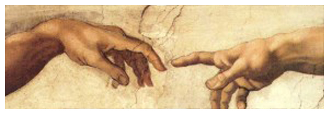

Dear God
By Barbara Shoup
Dear God,
 Okay, first, full disclosure: I don’t believe You are a You.
Okay, first, full disclosure: I don’t believe You are a You.
Of course, if I’m wrong and You are a You, You already know this—and everything else, for that matter. And if You really are the all powerful You so many people imagine, the one with long white hair sitting on a throne in heaven (wherever that is), maybe You’ve got Your finger raised right now, trying to decide whether to unleash that lightning bolt smite me for being insubordinate.
Or.
Maybe You’re thinking, Right on! Finally. Somebody actually using the brain I gave them.
And/or.
Laughing because, the brain You gave me was faulty. On purpose.
In which case, is this all some kind of cosmic game for You? Which would be pretty crappy on Your part. Still, I can see how You’d need something to counteract the boring, unrelenting goodness of heaven.
To be fair, I should say that, despite my deep reservations about Your existence, I make use of You. I tell my writing students, “Human beings are not only good or only bad. There are no pure heroes or villains. It’s way more messy than that. Creating believable characters is like being God. Imagine Him up there in heaven, creating us one-by-one, setting us in motion. Not controlling us, just rooting for us as we make our way through the world He made. High-fiving St. Peter when we do something good and right.
“Doh!” he says, covering his face with his hands when we blow it. When we’re stupid, mean, arrogant, stingy, unforgiving—or worse. Always hoping we’ll do better next time.
Maybe this next thought is blasphemous, it probably is—and if so, I apologize. Seriously.
But what if You’re just like us—fiction writers, I mean. What if you keep trying and failing to make the world You imagine here on earth?
Like me using the faulty brain You gave me to trick some unanswerable question into a story, hoping against hope that the world I make with words will offer up some small thing that helps me better understand the world You made.
What if each one of us is a story-in-progress?
What if writing a story is a kind of prayer?
Not the kind that asks for favors, but the kind that asks a question—the question always being “Why?”
For example, You may remember that my sister, Jackie, died of brain cancer a while ago. If you are You, all powerful, You decided this would happen to her.
When she called to tell me about the diagnosis, she kept saying in a stunned voice, nothing like her own, “But I’m a good person. A good person.”
And, as You know, she really, truly was.
She was not a religious person. Nor was she an unbeliever. Just one of those live-in-the moment people who didn’t think a lot about such things. In any case, she didn’t have the personal relationship with You that some people describe, the kind in which prayer is like talking to your dad, asking, wheedling, promising to do…whatever if You will just…whatever.
But lots people who claim to know You that way prayed for her.
At first they prayed, “Please make Jackie get better”; then, when it became clear that You’d decided against that, “Please don’t let her suffer any more.”
During her long illness, at her funeral, they said:
God always knows what’s best for us.
(Brain cancer? Please.)
God never gives us more than we can handle.
(But Jackie so could not handle it, God. She lived in terror from the moment of her diagnosis till the hospice nurse gave her enough morphine so that she could finally just slip away. The rest of us didn’t handle it all that well either. We still aren’t.)
God works in mysterious ways.
(Which, I have to say, made me freaking furious every single time and made me want to grab whoever said it and shake the shit out of them, then get right in his or her face and say between clenched teeth, “That is the stupidest, most condescending, thoughtless and annoying thing you could possibly say. Do you actually believe it’s acceptable for God to treat my sister this way—or anyone, for that matter.)
It’s making me freaking furious all over again, writing about it now.
Because, let me tell You, God, it will soon be ten years since I got that awful call from my sister and, as far as I can tell, nothing but heartbreak has come from what You made happen to her.
Just last night I went to the wedding of the daughter of some good friends. We’ve known the bride since she was a little girl, watched her grow into a gawky teenager, and rooted for her as she struggled in those first years after college, trying to find herself, longing for love. Tall, willowy, radiant, she was a picture of happiness in her beautiful gown. After the ceremony, she danced the traditional first dance with her new husband. She danced with her dad. I felt so happy, watching them.
Then the groom danced with his mother.
And it hit me. Jackie won’t be there to dance with her son Sam when he gets married this summer and, God, my heart cracked in a whole new place.
I don’t know. Maybe You feel as bad about this as I do. Maybe when you were writing the story of Jackie, brain cancer just came into it and there was nothing you could do. (That happens with stories, I know.) Maybe you watched it all come down just as I did, hoping for a better, happier ending even knowing how unlikely that would be.
But all this is moot because, as I disclosed earlier, I don’t believe in You.
I believe if there is such a thing as God, He, She, It is nothing like us at all—but so vast and amorphous and truly strange that there are no words, there is nothing in our experience of being human that makes it possible to describe It—and it would be absurd to try.
Here I am talking to You, though—and I have to admit it does feel like I’m talking to Someone. Go figure.
As usual, wrestling with that faulty brain has left me in a muddle, strands of thought tangled hopelessly in my head. As usual, I conclude that all I can do is to keep on writing stories, keep on hoping that each one of them will answer some part of he question, Why?
If you are a You, please receive them as prayers.
If you’re not the kind of God equipped to receive anything from us, personally, or if there’s no God at all, nothing but us, and life is no more than some random quirk in the universe, I’ll keep writing them anyway.
Because I can’t not write and stay even a little bit sane in this crazy world.
Because one of the few things I believe absolutely is that the connections we make telling each other stories about life on this earth really, really matter.
Published in “On Earth as it Is.”
BARBARA'S BLOG

Read thoughts on books, authorship, teaching, and life on Barbara's blog.
BOOKS

Browse Barbara's books or read her essays.
CONTACT
Want to know more? Find media, press and publicity information here.
© Barbara Shoup 2012